春季节气茶饮
立春 - 桂圆红枣茶
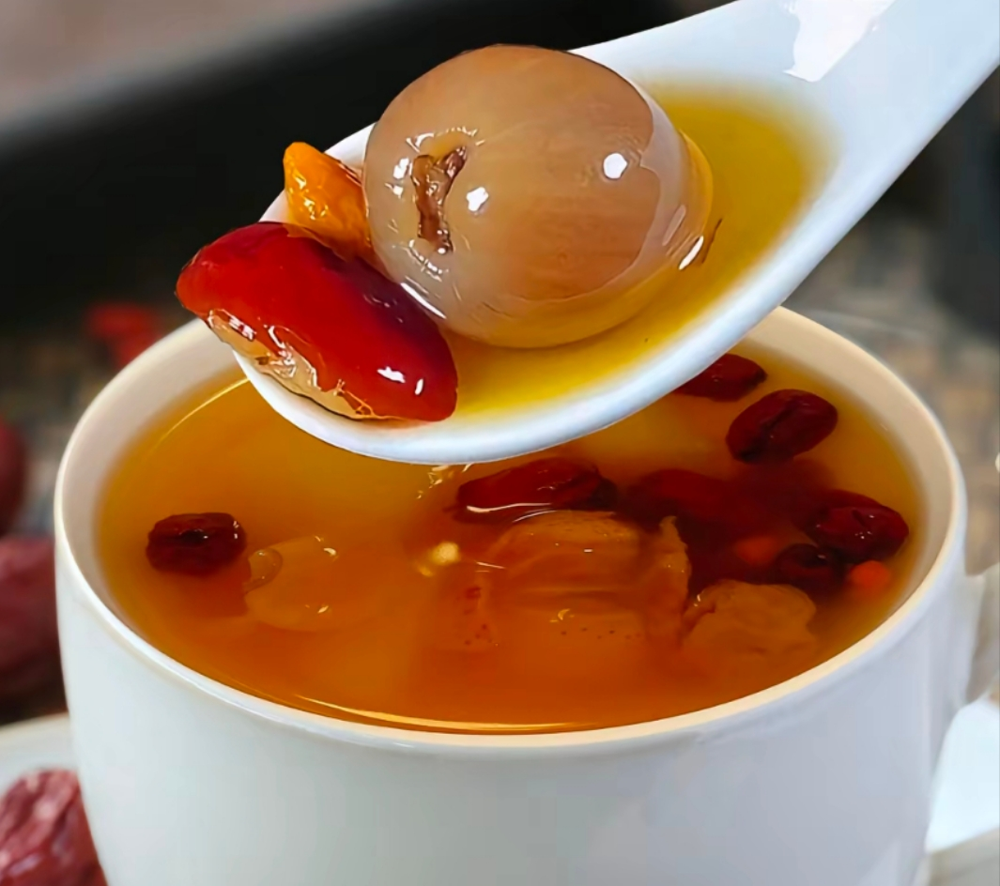
立春时节，阳气渐升，桂圆红枣茶可补血养颜、健脾暖胃。
材料：
- 桂圆干 5 颗
- 红枣 3 颗
- 冰糖适量
做法：
- 将桂圆干、红枣洗净，红枣去核。
- 把桂圆干、红枣放入锅中，加入适量清水，大火煮开后转小火煮 15 - 20 分钟。
- 加入冰糖，搅拌至融化即可。
雨水 - 陈皮普洱茶
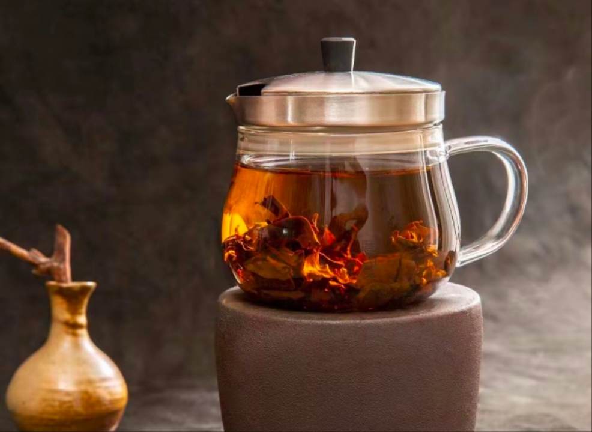
雨水时节，湿气渐重，陈皮普洱茶可理气健脾、祛湿化痰。
材料：
- 陈皮 5 克
- 普洱茶 3 克
做法：
- 将陈皮和普洱茶放入茶壶中。
- 用沸水冲泡，第一泡倒掉，然后再次用沸水冲泡，焖泡 3 - 5 分钟即可。
惊蛰 - 金银花茶
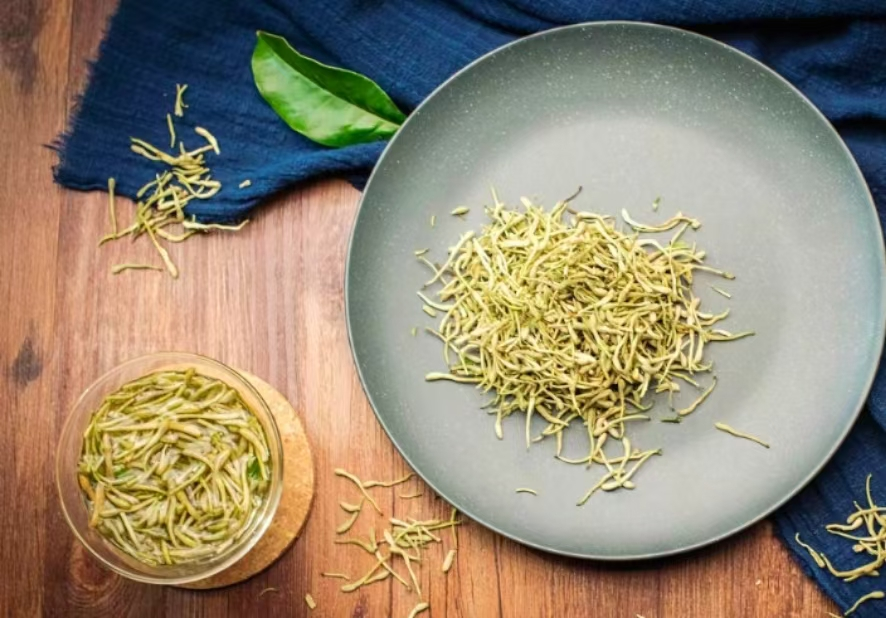
惊蛰时节，万物复苏，细菌滋生，金银花茶可清热解毒、疏散风热。
材料：
- 金银花 10 克
做法：
- 将金银花放入杯中。
- 用开水冲泡，焖泡 5 - 10 分钟即可。
春分 - 薄荷绿茶
春分时节，气候多变，薄荷绿茶有疏散风热、清利头目之效。
材料：
- 绿茶 5 克
- 薄荷叶 3 - 5 片
做法：
- 将绿茶和薄荷叶放入杯中。
- 用 80℃ 左右的热水冲泡，焖泡 3 - 5 分钟即可。
清明 - 菊花枸杞茶
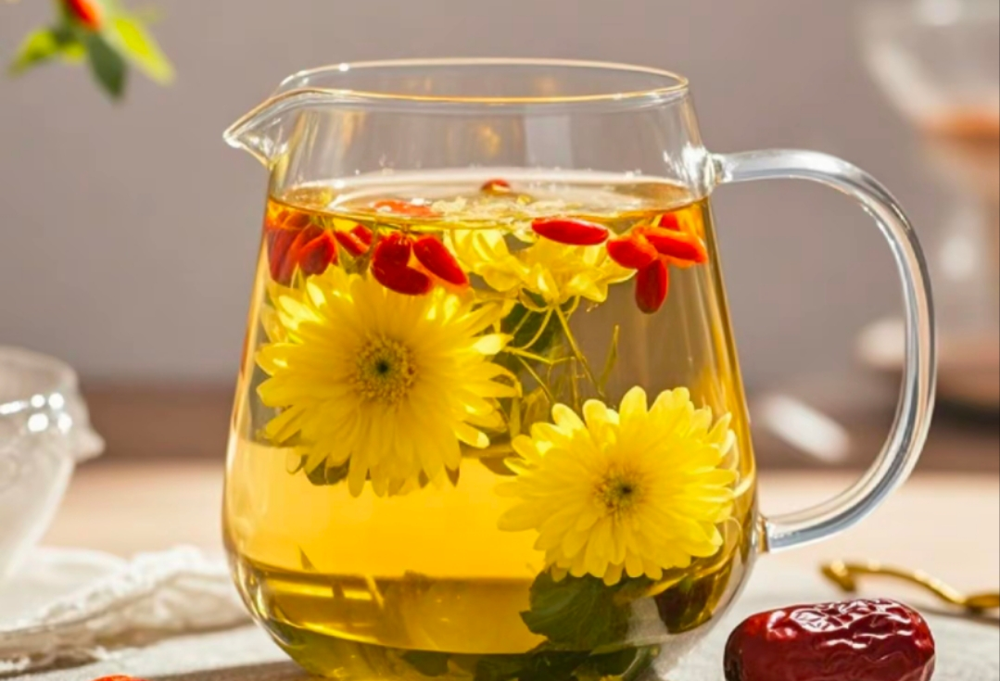
清明前后，天气渐暖，菊花枸杞茶可清肝明目、滋补肝肾。
材料：
- 菊花 5 朵
- 枸杞 10 颗
做法：
- 将菊花和枸杞放入杯中。
- 用开水冲泡，焖泡 5 - 10 分钟即可。
谷雨 - 玫瑰花茶
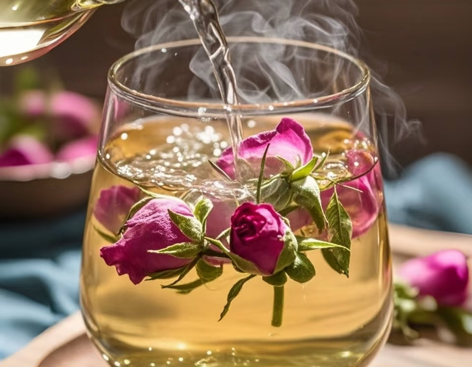
谷雨时节，气温升高，玫瑰花茶能理气解郁、活血散瘀。
材料：
- 干玫瑰花 8 - 10 朵
做法：
- 将干玫瑰花放入杯中。
- 用开水冲泡，焖泡 3 - 5 分钟即可。
夏季节气茶饮
立夏 - 荷叶茶
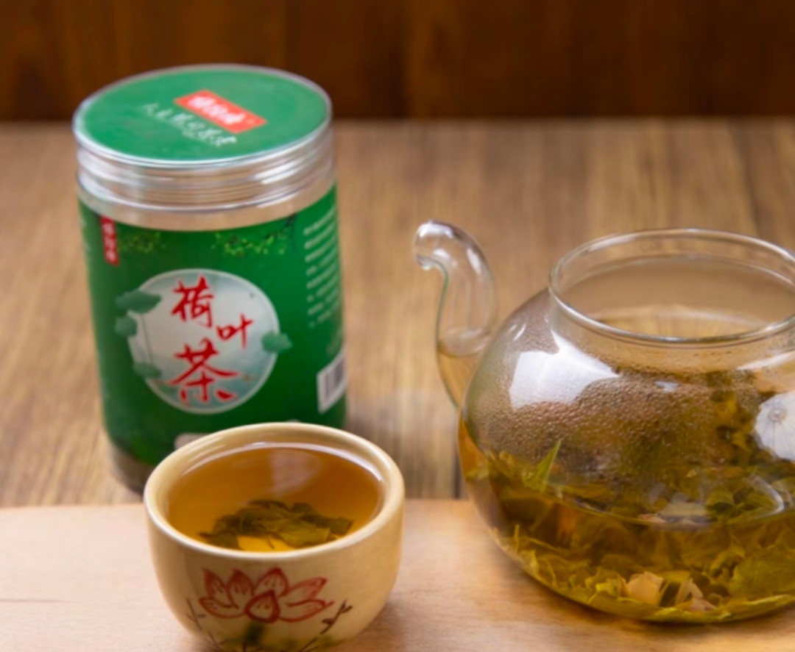
立夏之后，气温升高，荷叶茶有清热解暑、升发清阳之效。
材料：
- 干荷叶 10 克
做法：
- 将干荷叶撕成小片，放入杯中。
- 用开水冲泡，焖泡 5 - 10 分钟即可。
小满 - 薏仁茶
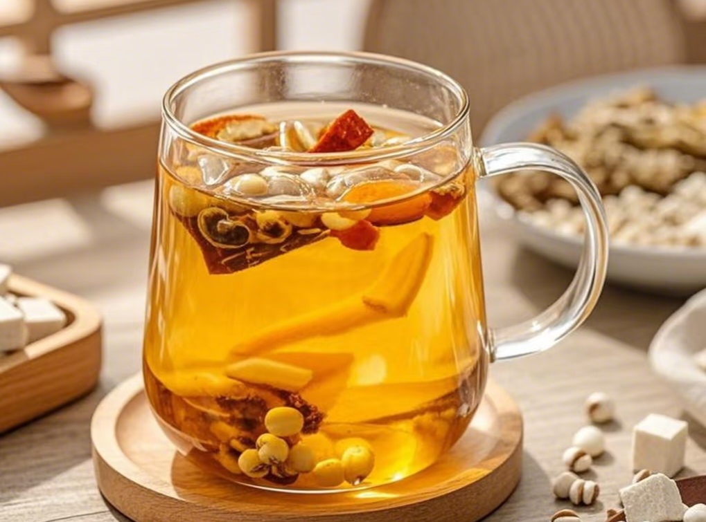
小满时节，湿气渐重，薏仁茶能利水渗湿、健脾止泻。
材料：
- 薏仁 20 克
做法：
- 薏仁洗净后，用清水浸泡 2 - 3 小时。
- 将薏仁放入锅中，加适量水，大火煮开后转小火煮 30 - 40 分钟。
芒种茶饮
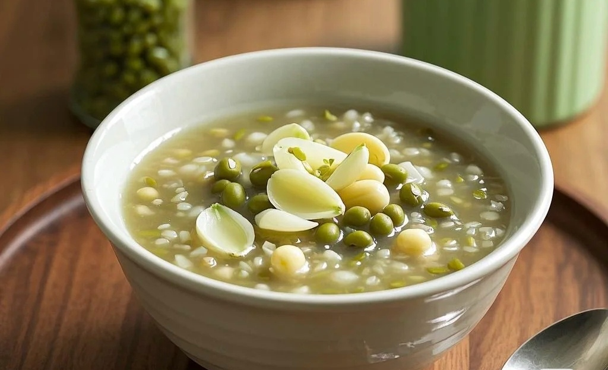
芒种期间，天气炎热，绿豆百合茶可清热解毒、润肺止咳。
材料：
- 绿豆 30 克
- 百合 10 克
做法：
- 绿豆和百合洗净，用清水浸泡 1 小时。
- 将绿豆和百合放入锅中，加适量水，大火煮开后转小火煮 40 - 50 分钟，至绿豆软烂。
夏至 - 酸梅汤
夏至酷热，酸梅汤能开胃消食、生津止渴。
材料：
- 乌梅 20 颗
- 山楂 10 颗
- 甘草 5 克
- 冰糖适量
做法：
- 乌梅、山楂和甘草洗净，用清水浸泡 30 分钟。
- 将浸泡好的材料放入锅中，加适量水，大火煮开后转小火煮 40 - 50 分钟。
- 加入冰糖，搅拌至融化，放凉后即可饮用。
小暑 - 薄荷柠檬茶
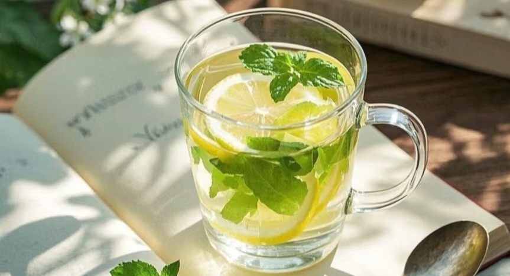
小暑时节，暑气正盛，薄荷柠檬茶可提神醒脑、清热解暑。
材料：
- 薄荷叶 5 片
- 柠檬 1 片
- 绿茶 3 克
- 蜂蜜适量
做法：
- 将绿茶用 80℃ 热水冲泡，焖泡 3 - 5 分钟。
- 加入薄荷叶和柠檬片，待水温稍凉后，加入蜂蜜搅拌均匀。
大暑 - 金银花甘草茶
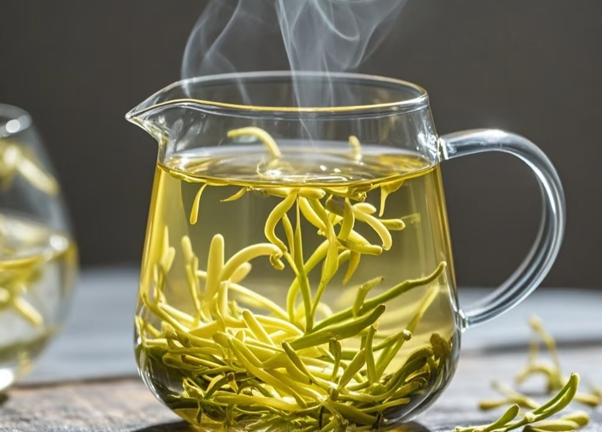
大暑是一年中最热的时候，金银花甘草茶能清热解毒、调和药性。
材料：
- 金银花 10 克
- 甘草 3 克
做法：
- 将绿茶用 80℃ 热水冲泡，焖泡 3 - 5 分钟。
- 加入薄荷叶和柠檬片，待水温稍凉后，加入蜂蜜搅拌均匀。
秋季节气茶饮
立秋 - 雪梨百合茶
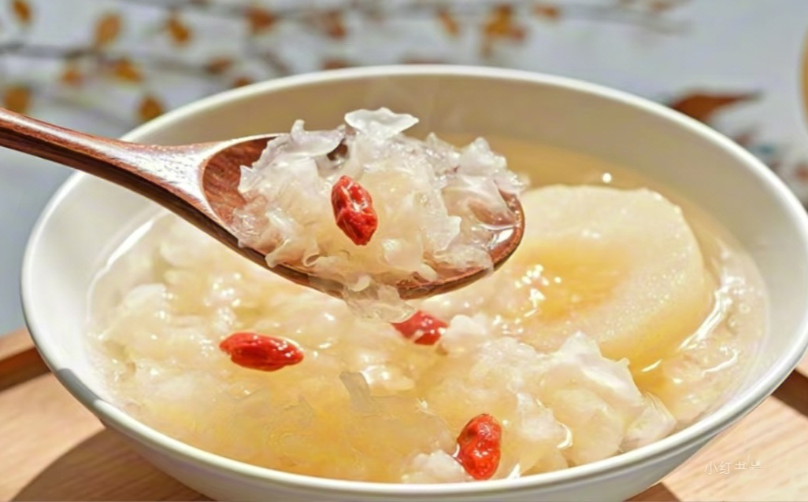
立秋后，气候渐燥，雪梨百合茶有润肺止咳、清热生津之效。
材料：
- 雪梨 1 个
- 百合 10 克
- 冰糖适量
做法：
- 雪梨洗净去核，切成小块；百合洗净。
- 将雪梨块、百合放入锅中，加适量水，大火煮开后转小火煮 20 - 30 分钟。
- 加入冰糖，搅拌至融化即可。
处暑 - 桂花乌龙茶
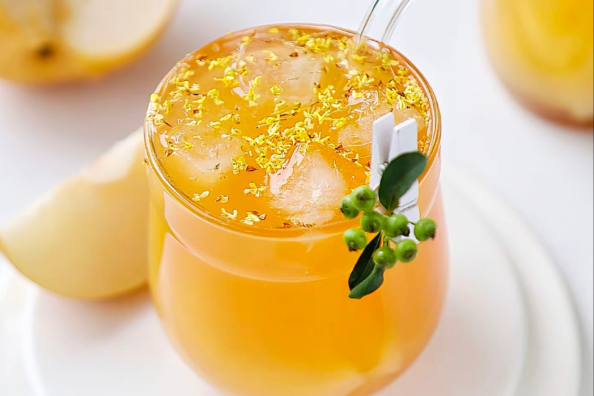
处暑时暑气渐消，桂花乌龙茶可滋阴润肺、舒缓身心。
材料：
- 乌龙茶 5 克
- 干桂花 3 克
做法：
- 将乌龙茶和干桂花放入杯中。
- 用 90℃ 左右的热水冲泡，焖泡 3 - 5 分钟即可。
白露 - 红枣桂圆姜茶
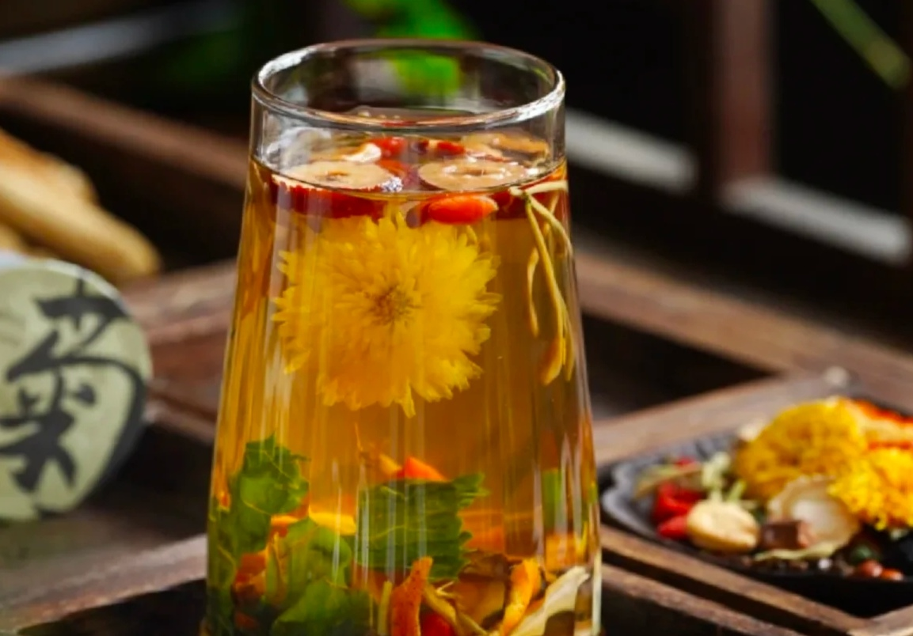
白露后昼夜温差大，红枣桂圆姜茶能暖身驱寒、补气养血。
材料：
- 红枣 5 颗
- 桂圆 5 颗
- 生姜 3 片
- 红糖适量
做法：
- 红枣去核，桂圆去壳，生姜切片。
- 将红枣、桂圆、生姜放入锅中，加适量水，大火煮开后转小火煮 15 - 20 分钟。
- 加入红糖，搅拌至融化即可。
秋分 - 菊花普洱茶
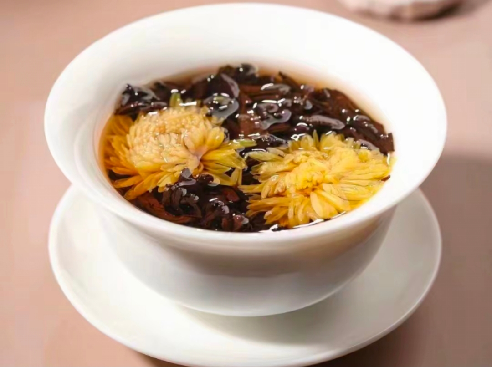
秋分时节，天气干燥，菊花普洱茶可清热明目、消食解腻。
材料：
- 菊花 5 朵
- 普洱茶 3 克
做法：
- 将菊花和普洱茶放入杯中。
- 用开水冲泡，焖泡 5 - 10 分钟即可。
寒露 - 枸杞红枣茶
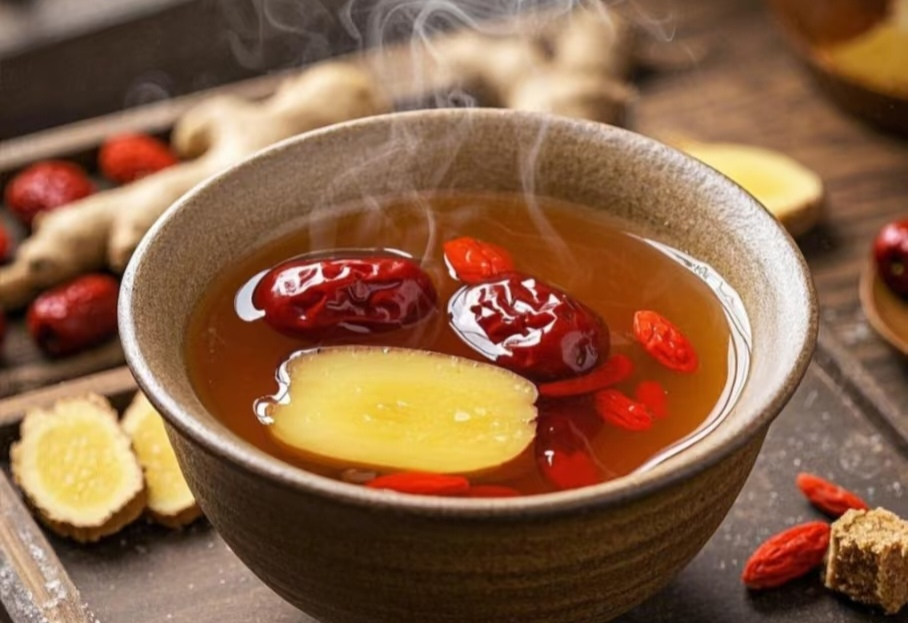
寒露后天气渐冷，枸杞红枣茶能滋补肝肾、养血安神。
材料：
- 枸杞 10 颗
- 红枣 5 颗
- 冰糖适量
做法：
- 红枣去核，与枸杞一起放入锅中。
- 加适量水，大火煮开后转小火煮 15 - 20 分钟。
- 加入冰糖，搅拌至融化即可。
霜降 - 陈皮山楂茶
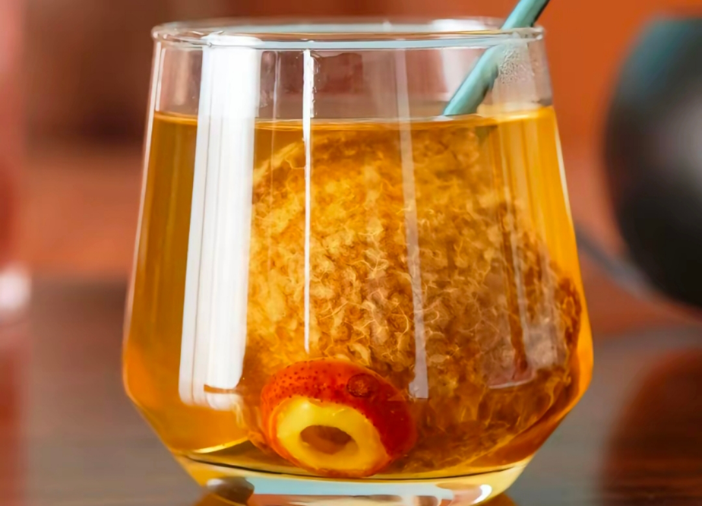
霜降时，人体易积食，陈皮山楂茶可理气健脾、消食化积。
材料：
- 陈皮 5 克
- 山楂 10 克
做法：
- 将陈皮和山楂放入杯中。
- 用开水冲泡，焖泡 10 - 15 分钟即可。
冬季节气茶饮
立冬 - 桂圆红枣姜茶
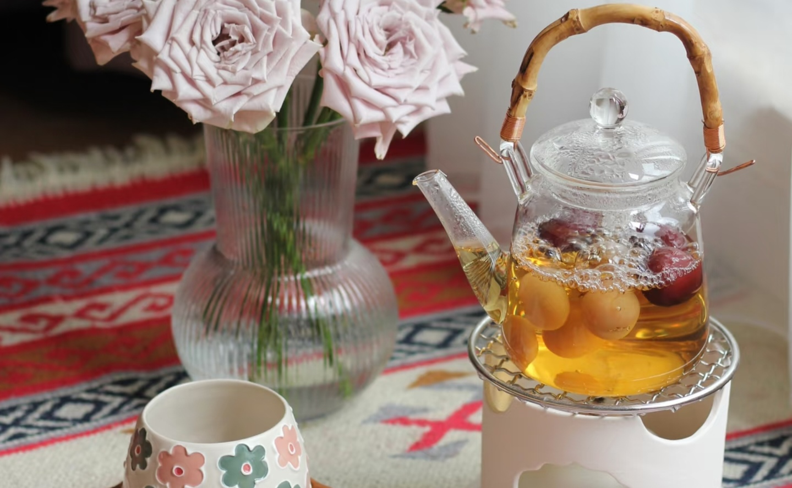
立冬后天气渐冷，桂圆红枣姜茶可暖身驱寒、补气养血。
材料：
- 桂圆 5 颗
- 红枣 5 颗
- 生姜 3 片
- 红糖适量
做法：
- 红枣去核，桂圆去壳，生姜切片。
- 将桂圆、红枣、生姜放入锅中，加适量水，大火煮开后转小火煮 15 - 20 分钟。
- 加入红糖，搅拌至融化即可。
小雪 - 熟普洱茶
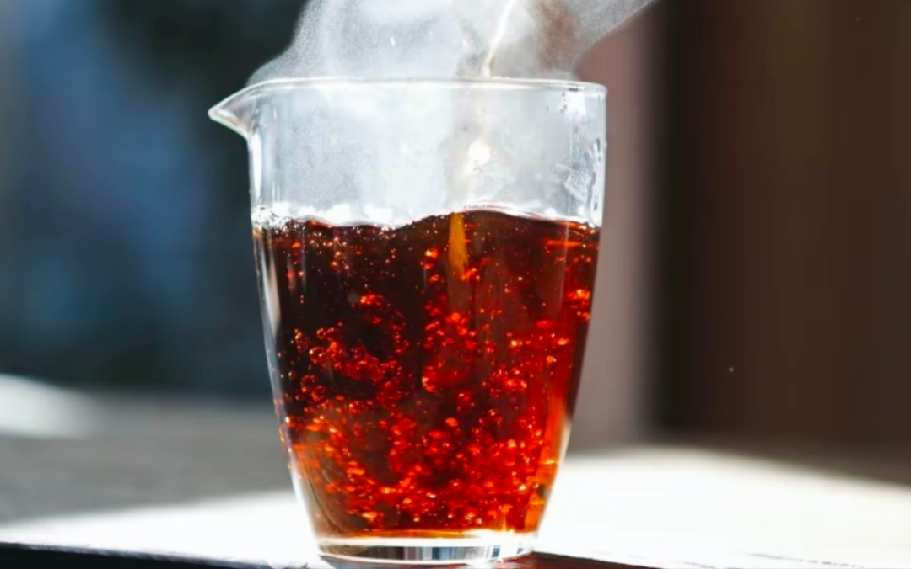
小雪时节，天气寒冷，熟普洱茶能暖胃驱寒、帮助消化。
材料：
- 熟普洱茶 5 克
做法：
- 将熟普洱茶放入茶壶或杯中。
- 用沸水冲泡，第一泡可快速冲洗茶叶后倒掉，然后再次用沸水冲泡，焖泡 3 - 5 分钟即可。
大雪 - 核桃芝麻茶
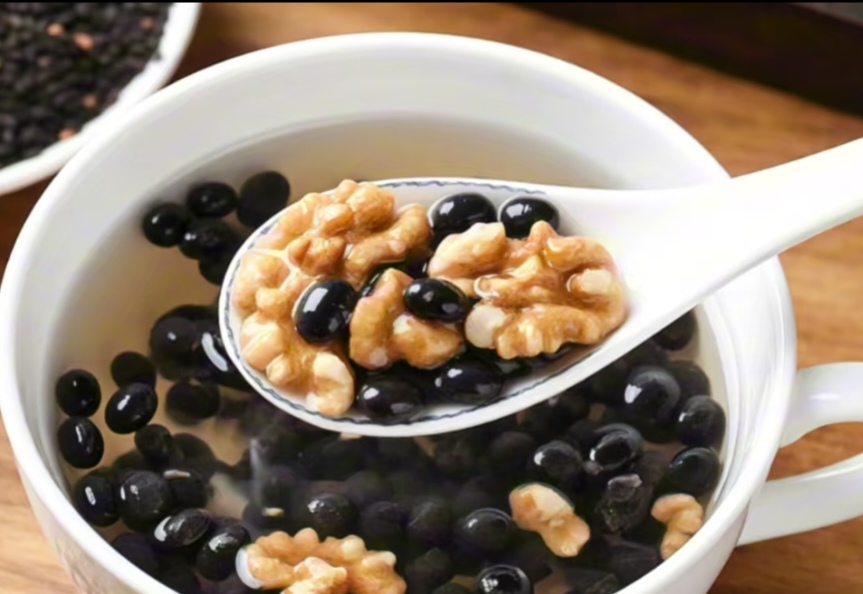
大雪期间，人体需滋补，核桃芝麻茶能补肾益精、润肠通便。
材料：
- 核桃仁 10 克
- 黑芝麻 10 克
- 冰糖适量
做法：
- 将核桃仁和黑芝麻研磨成粉末。
- 把粉末放入杯中，加入适量冰糖。
- 用开水冲泡，搅拌均匀即可。
冬至 - 肉桂红茶
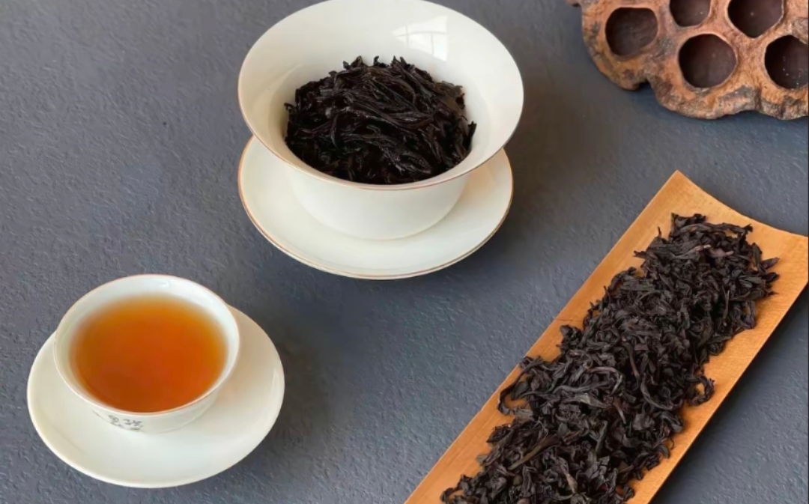
冬至是一年中最冷的时候，肉桂红茶可温补肾阳、散寒止痛。
材料：
- 红茶 5 克
- 肉桂 3 克
做法：
- 将红茶和肉桂放入茶壶或杯中。
- 用沸水冲泡，焖泡 5 - 10 分钟即可。
小寒 - 人参茶
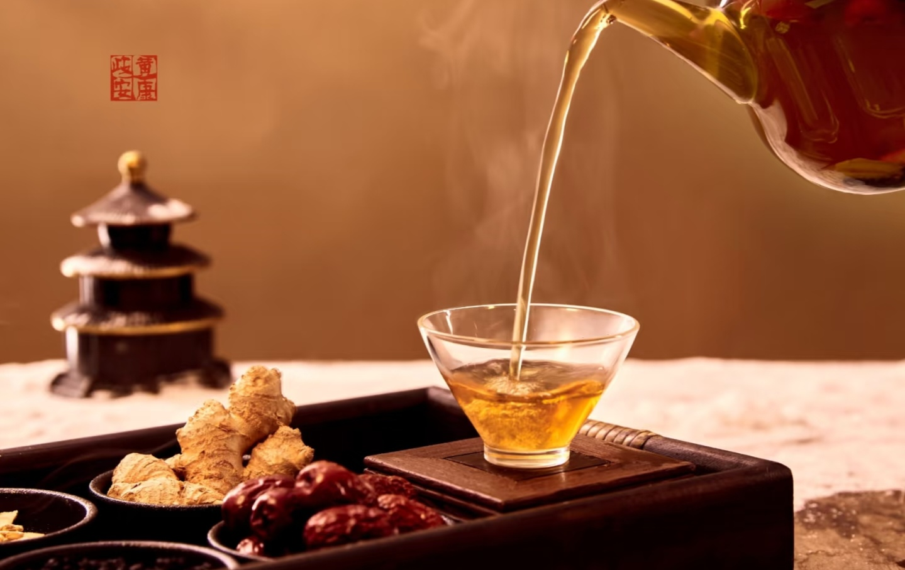
小寒时节，人体阳气虚弱，人参茶能大补元气、复脉固脱。
材料：
- 人参 3 克
做法：
- 将人参切成薄片，放入杯中。
- 用开水冲泡，焖泡 10 - 15 分钟即可，可多次续水。
大寒 - 姜母茶
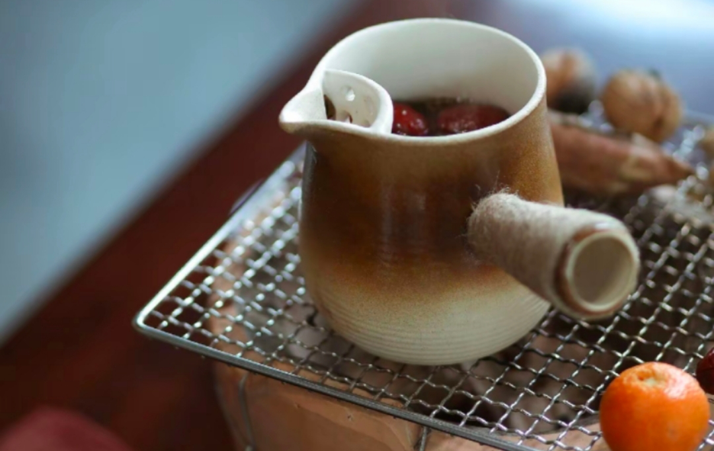
大寒是一年中最寒冷的时段，姜母茶能暖身驱寒、促进血液循环。
材料：
- 老姜 20 克
- 红糖 15 克
做法：
- 老姜洗净，切成丝。
- 将姜丝放入锅中，加适量水，大火煮开后转小火煮 15 - 20 分钟。
- 加入红糖，搅拌至融化即可。